Figures: PNG placeholders live in manual_figures/ (generated by scripts/generate_manual_figure_images.py). Replace those files—or swap images in Word—with real intranet screenshots. Capture at 100% zoom; redact secrets.
Firmgate is your internal portal for news, blogs, calendars, documents, collaboration, and company information. Access is controlled by your account and assigned permissions (for example Standard or Power users vs administrators).
This manual describes common tasks. Exact labels may vary slightly if your administrator customises the portal.
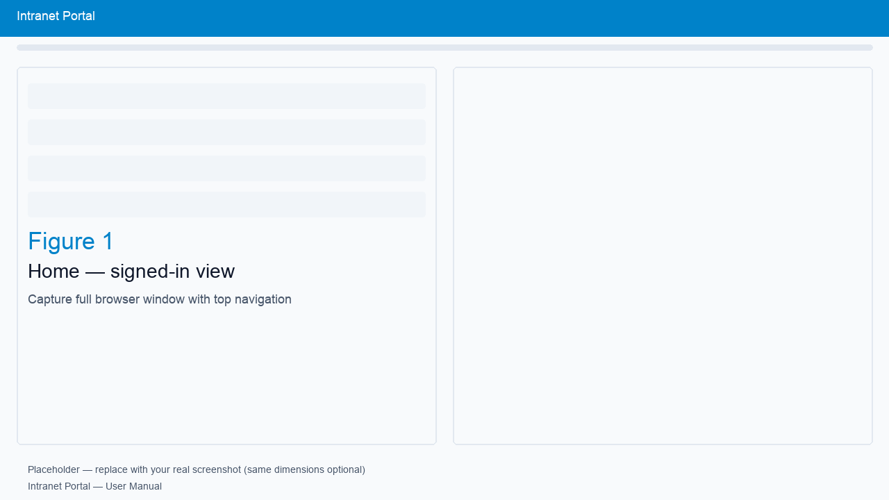
Figure 1: Overview of the intranet after login.
https:// address).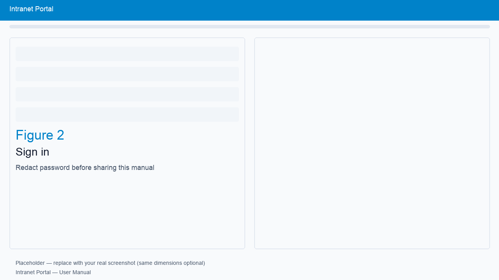
Figure 2: Sign-in screen.
Home typically shows announcements, news posts, or pinned updates. Click an article to read full content. Your administrator may configure categories or visibility.
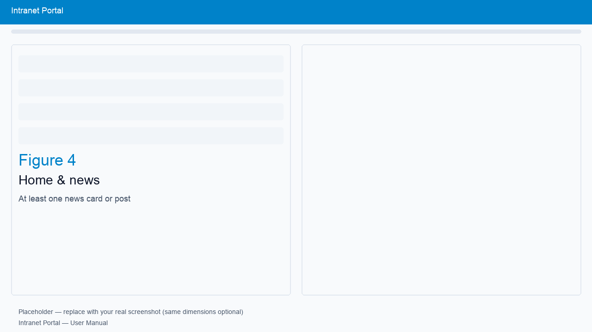
Figure 4: Home / news.
Use Blogs for internal blog posts if enabled. You may read posts and, if permitted, create or comment depending on your role.
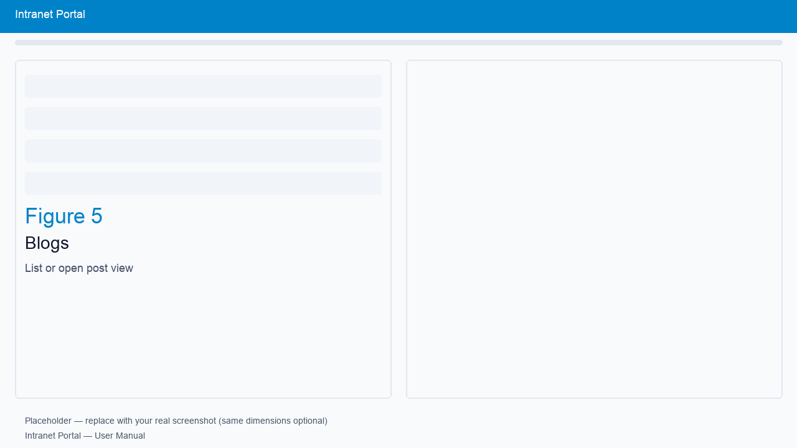
Figure 5: Blogs.
Events opens the company calendar.
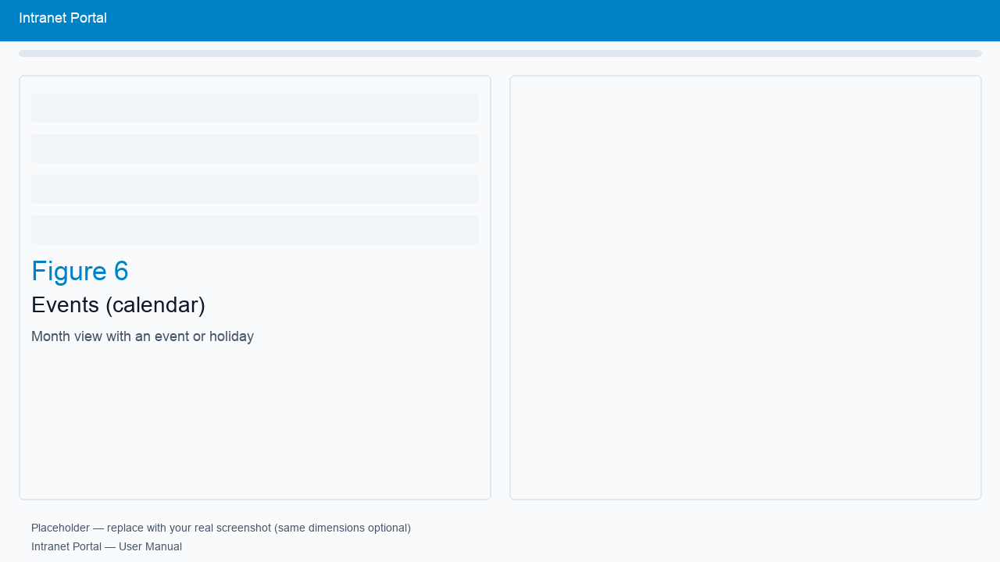
Figure 6: Events calendar.
Team Chat provides chat rooms and messages for staff collaboration (subject to your permissions). Open a room, send messages, and follow threads as configured by your organisation.
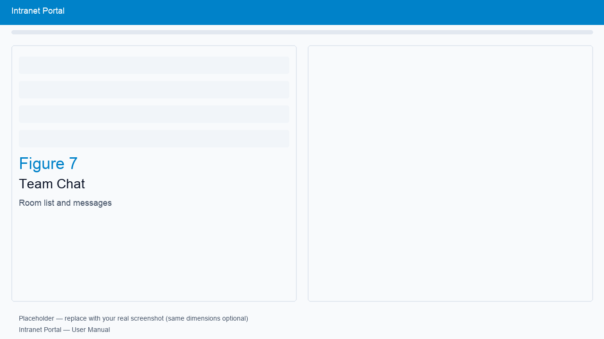
Figure 7: Team Chat.
Workforce and Workforce Dashboard show workforce-related tools or metrics your organisation enables (locations, presence, or dashboards — varies by deployment).
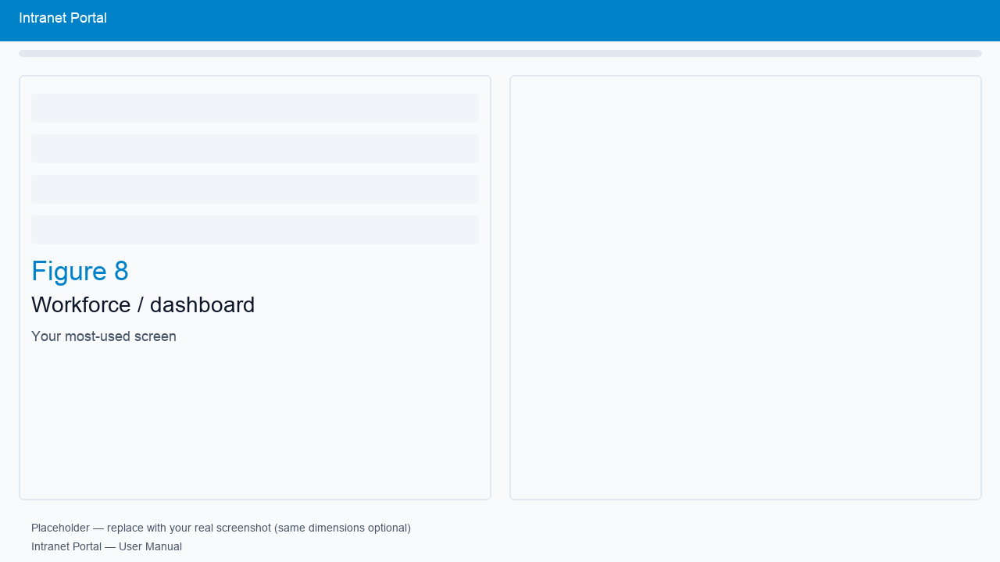
Figure 8: Workforce / dashboard.
If enabled, this area supports security clearance workflows or records. Follow prompts from your security or HR team.
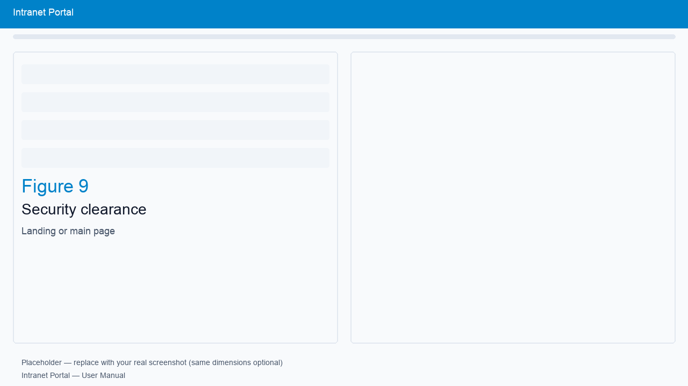
Figure 9: Security clearance.
Security Training lists approved training files (e.g. videos and slide decks).
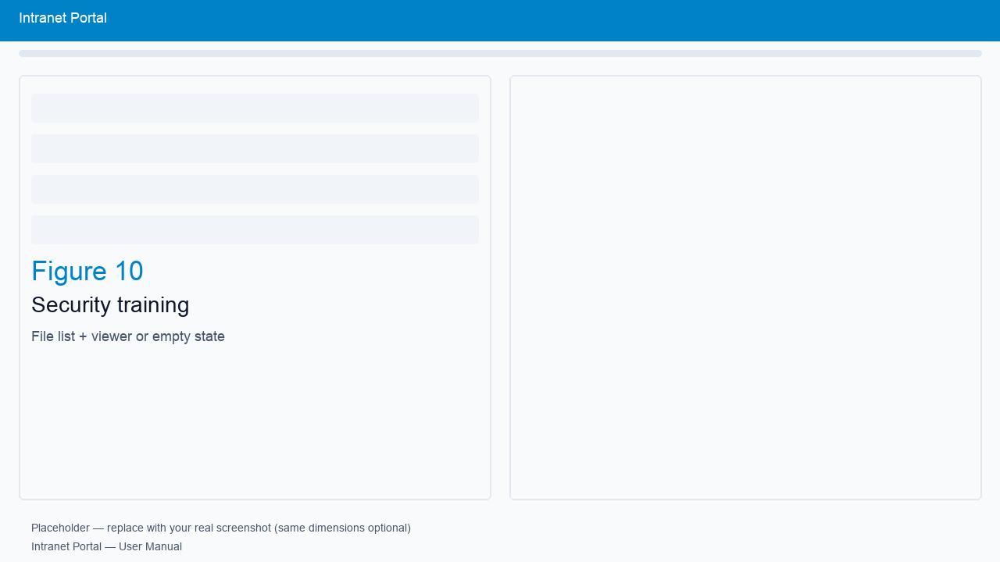
Figure 10: Security training.
Documents is the file browser. Most users see their own Home folder under “All files,” plus items shared with you or shared by you.
To share with a colleague, use the sharing option on a file or folder you own (if enabled). Recipients need accounts on the intranet. Shared items appear in their root view under “Shared with you.”
If available, mark items as favourites or personal per your organisation’s policy.
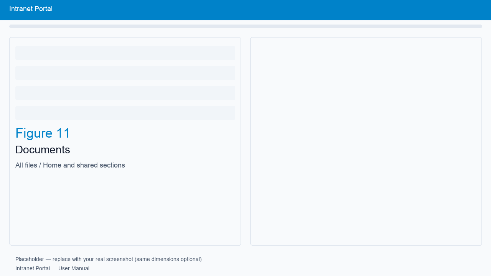
Figure 11: Documents browser.
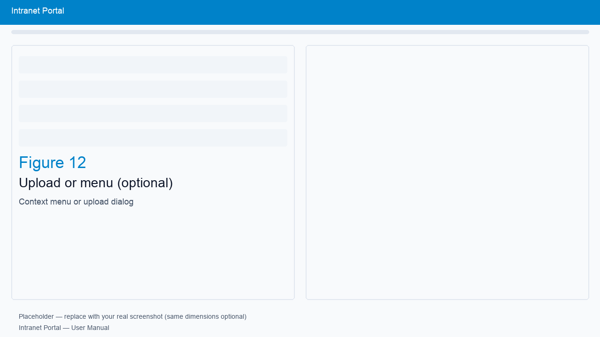
Figure 12: Upload / actions (optional).
The CRM module stores leads, companies, or activities if your team uses it. Navigation and permissions depend on your role.
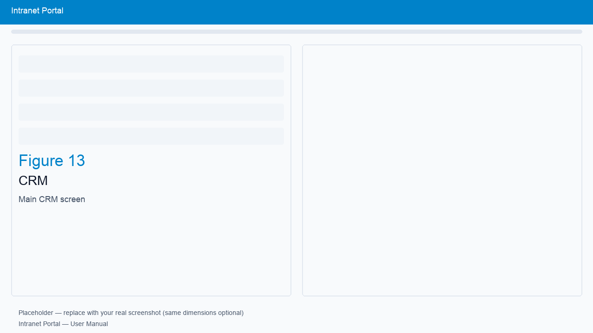
Figure 13: CRM.
Company profile or reference information prepared by your communications or leadership team.
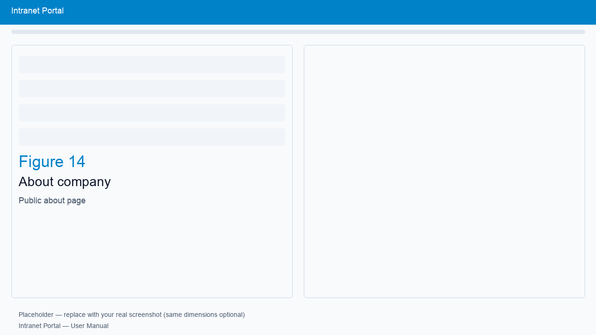
Figure 14: About company.
Users with Administration access can manage users, roles, integrations (e.g. OnlyOffice), portal branding, backups, and other settings. This manual does not replace IT runbooks.
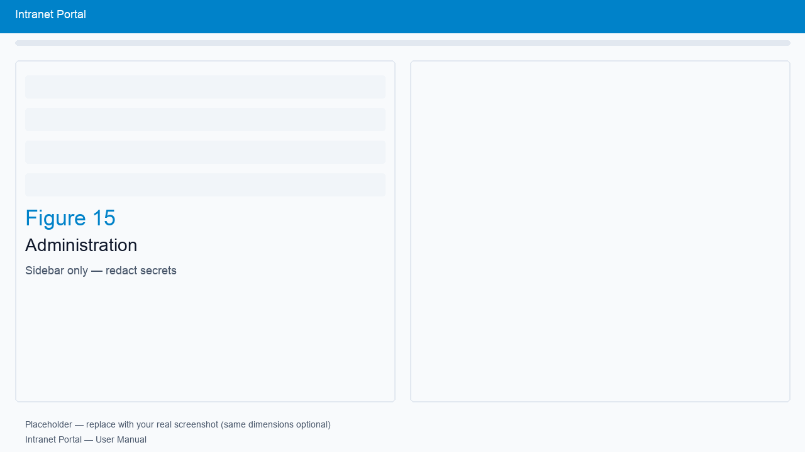
Figure 15: Administration (redact secrets).
| Issue | What to try |
|---|---|
| Cannot sign in | Reset password via IT; confirm correct URL and caps lock. |
| Office file / slides won’t open | Try another browser; ensure HTTPS; ask IT to verify OnlyOffice URL, app URL, and JWT secret. |
| “Document security token” error | IT must align JWT secret between Document Server and intranet Integrations. |
| Missing menu item | Your role may not include that module — ask your administrator. |
Use this list when capturing figures for the placeholders above: